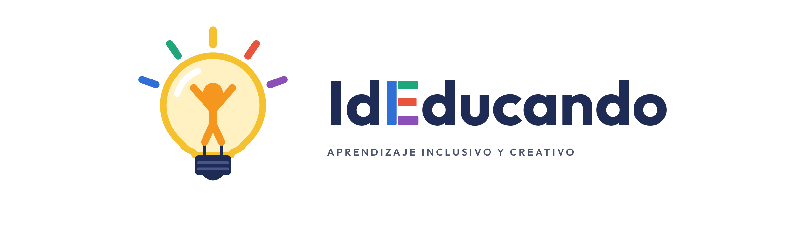
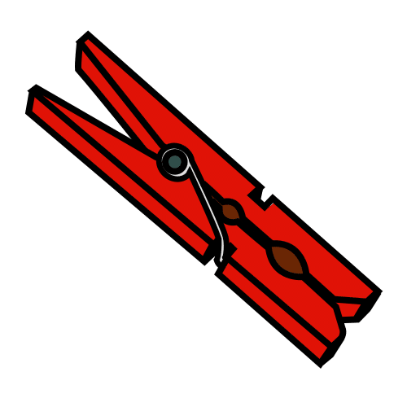
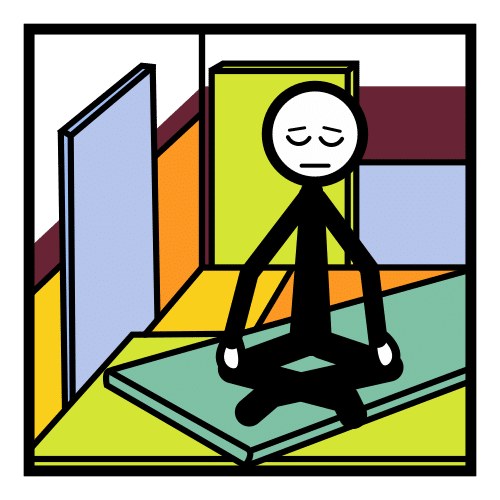
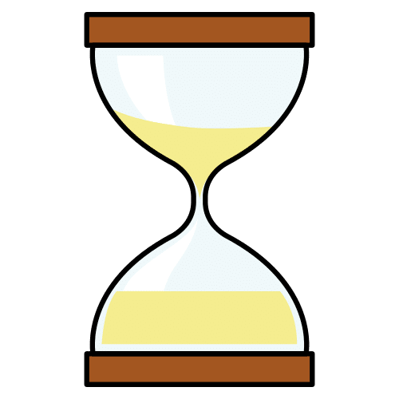
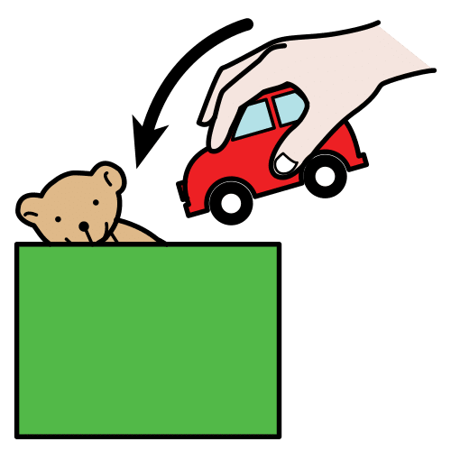
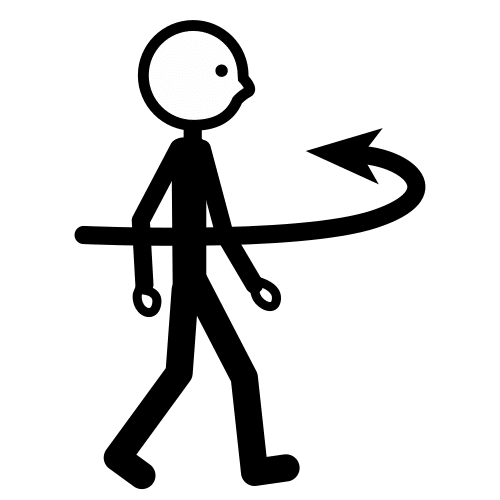

Apoyo visual · Regulación emocional
Un termómetro para ponerle nombre a lo que siento y 12 ideas para volver a la calma.
[BORRADOR] Pendiente de revisión por el equipo docente.
Pictogramas: Sergio Palao. ARASAAC (Gobierno de Aragón). CC BY-NC-SA.
Licencia CC BY-NC-SA 4.0
ideducando.es
Pon tu pinza

en el número que dice cómo estás ahora.Las caras son de IdEducando. Pictograma de la pinza: Sergio Palao. Origen: ARASAAC (arasaac.org). Licencia CC BY-NC-SA. Propiedad: Gobierno de Aragón.
Un sitio para cualquiera que lo necesite.

Vengo cuando lo necesito.También puedo pedirlo.

Me quedo un ratito.Mientras cae la arena del reloj.

Cuido el material.Lo dejo en su sitio al irme.

Vuelvo cuando estoy en el 1 o el 2.Miro el termómetro antes de volver.
Pictogramas: Sergio Palao. Origen: ARASAAC (arasaac.org). Licencia CC BY-NC-SA. Propiedad: Gobierno de Aragón.
Recorta, plastifica y deja las tarjetas en el rincón, en una caja o en una anilla.
Pictogramas: Sergio Palao. Origen: ARASAAC (arasaac.org). Licencia CC BY-NC-SA. Propiedad: Gobierno de Aragón.
Prueba cada idea en un momento tranquilo, antes de necesitarla: así será fácil usarla cuando cueste.
Pictogramas: Sergio Palao. Origen: ARASAAC (arasaac.org). Licencia CC BY-NC-SA. Propiedad: Gobierno de Aragón.
Me llamo
Rellenadlo juntos en un momento tranquilo. Rodea lo que te ayuda o señálalo y que lo rodee un adulto.
Guía para docentes [BORRADOR]
Calmarse se aprende, igual que leer: al principio con mucha ayuda de un adulto y poco a poco con más autonomía. Un rincón de la calma es un lugar del aula donde cualquier alumno o alumna puede ir a recuperar la calma con apoyos visuales y materiales sencillos. El rincón en sí apenas se ha estudiado. Lo que sí tiene respaldo es enseñar de forma explícita a reconocer y regular las emociones (Blewitt y otros, 2018) y que un adulto cálido acompañe ese aprendizaje (Murray y otros, 2015): el rincón es una herramienta para eso, y nunca sustituye al adulto.
En el nivel más alto, lo primero es la seguridad de todos. Habla poco, con voz tranquila y frases cortas. Ofrece espacio y agua. Quédate cerca sin agobiar. Retira lo que pueda ser peligroso y, si hace falta, acompaña al resto del grupo a otra zona. Sigue el protocolo de tu centro y avisa al equipo directivo si la situación lo pide.
Siguiendo el Diseño Universal para el Aprendizaje (DUA), que propone varias formas de participar:
Un rincón tranquilo y visible desde tu mesa, un cojín o una alfombra, un reloj de arena, una pelota blanda, unos cascos, papel y lápices de colores y dos o tres cuentos. Nada tiene que ser caro. Evita las mantas o los chalecos con peso y nunca envuelvas a nadie: su eficacia no está demostrada y su mal uso ha causado accidentes graves (Zimmer y Desch, 2012).
Si un alumno o alumna está a menudo en el 4 o en el 5, habla con el equipo de orientación y con la familia: el plan de calma es un buen punto de partida. Desde la Ley Orgánica 8/2021 (LOPIVI), cada centro tiene una persona coordinadora de bienestar y protección a la que también puedes acudir (artículo 35). La educación emocional forma parte del currículo: la Ley Orgánica de Educación pide atenderla en Infantil y en Primaria (artículos 14.3 y 19.2).
Al principio puede ser la novedad. Mantén el reloj de arena y ofrece volver con algo sencillo. Si dura semanas, observa qué tarea evita con el registro ABC de IdEducando.
No hace falta. Reconoce el esfuerzo con palabras: «Te has dado cuenta de que estabas en el 4 y has ido a respirar». Así sabe qué ha hecho bien.
Durante unas semanas, apunta cada vez que alguien usa el rincón. Verás qué ideas funcionan, a qué horas se usa más y si alguien necesita un apoyo más ajustado. Escribe solo iniciales y guarda la hoja en el centro.
| Fecha y hora | Iniciales | Nivel al llegar | Idea que eligió | Nivel al volver | Minutos |
|---|---|---|---|---|---|
El rincón de la calma: termómetro de emociones y tarjetas de estrategias. IdEducando, octubre de 2026. Ficha y novedades: ideducando.es/material-gratuito/rincon-de-la-calma
Fuentes: Blewitt, C. y otros (2018), JAMA Network Open, 1(8), e185727; Murray, D. W. y otros (2015), Self-regulation and toxic stress (OPRE Report 2015-21); Zimmer, M. y Desch, L. (2012), Pediatrics, 129(6), 1186-1189; Hume, K. y otros (2021), Journal of Autism and Developmental Disorders, 51(11), 4013-4032; Buron, K. D. y Curtis, M. (2012), The Incredible 5-Point Scale (2.ª ed.), AAPC, y Kuypers, L. M. (2011), The Zones of Regulation, Think Social Publishing, como otras escalas de referencia; Ley Orgánica 2/2006 de Educación, artículos 14.3 y 19.2; Ley Orgánica 8/2021 (LOPIVI), artículos 1.2 y 35; Decreto 16/2016 de la Región de Murcia, artículo 26; CAST (2024), Universal Design for Learning Guidelines 3.0.
Pictogramas: «Los símbolos pictográficos utilizados son propiedad del Gobierno de Aragón y han sido creados por Sergio Palao para ARASAAC (https://arasaac.org), que los distribuye bajo Licencia Creative Commons BY-NC-SA». Si adaptas el material, mantén este texto. Con pictogramas de ARASAAC, el material no se puede vender. Las caras del termómetro son de IdEducando.
Licencia CC BY-NC-SA 4.0: puedes copiarlo y adaptarlo citando a IdEducando, sin fines comerciales.
Para las familias
En clase tenemos un rincón de la calma. Allí aprendemos a ponerle nombre a lo que sentimos y a buscar formas de volver a estar bien. Usamos este termómetro:
Todas las emociones están permitidas: enfadarse o estar triste es normal. Lo que aprendemos es qué hacer con ellas. El rincón no es un castigo: es un sitio para cualquiera que lo necesite.
El rincón de la calma. IdEducando, octubre de 2026. Licencia CC BY-NC-SA 4.0. Los símbolos pictográficos utilizados son propiedad del Gobierno de Aragón y han sido creados por Sergio Palao para ARASAAC (https://arasaac.org), que los distribuye bajo Licencia Creative Commons BY-NC-SA.